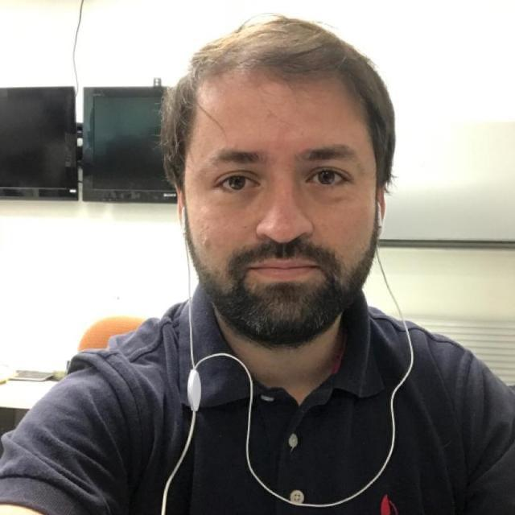

Cristian Felipe Cornejo Farias | WDD 130

I am Cristian, I from Santiago de Chile, I working as a Sysadmin in a Mexican company, I have 16 years of experience and I still having new experiences!. I enjoy play PS5 and walk with my dog and in the same time listen the scriptures.When I was a child I dreamed becoming a great astronomer and view the stars and the galaxys with my own eyes. Later my dream changed a little, and I began to dream to become a bus driver, but the time said me that that careers could not be part of my life, over the pass of the years my opinions about what carrer must be choise changed radicaly and now I a system engineer. Since 6 years ago Iam a member of the church of Jesuschrist of later day saints and that decision came to my life to improve everything, I learned more about life, commandments and the purpose of the life and the miracle of the eternal life with our families. Now I focused on my work, my studies, not only secular, but religious, it is important to have a good balance between personal, familiar, and other responsibilities like work and studies. The blessings coming to my life to give a real purpose to follow Jesuschrist and be like Him, sustain my family and put all my efforts to know something else every day, if we obtain a new knowlegment daily, we have a daily victory and our purpuse is taken the rigth way.